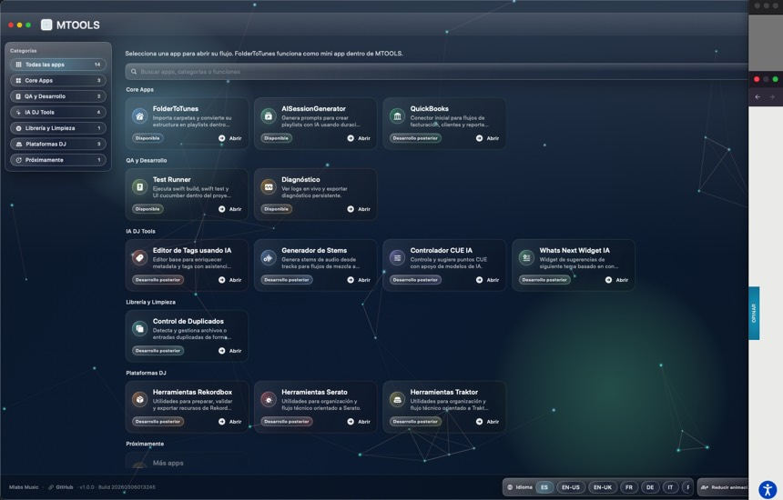
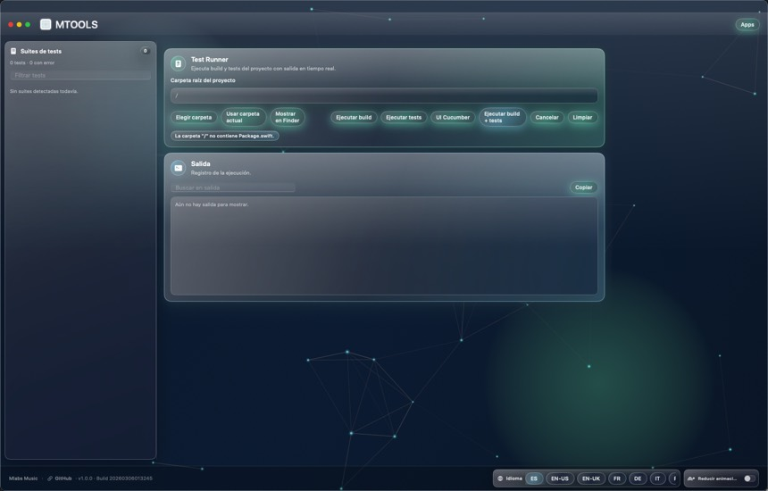
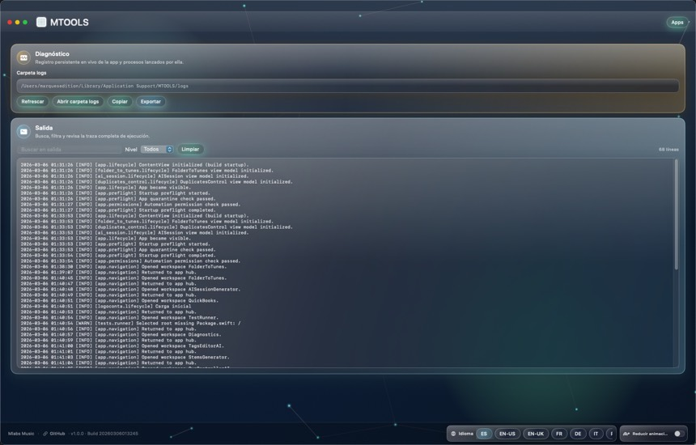

Beta Access
Onboarding guiado con modulos base y canal directo de feedback de producto.
- Digital Download
- Compatible with Windows and Mac, including the new Apple Silicon chips
MTOOLS - Vision general de plataforma
Desde la preparacion musical hasta el control de release, MTOOLS ofrece un solo espacio de trabajo: decisiones mas rapidas, menos friccion operativa y ejecucion predecible.
Una sola seccion en home con dos tabs: propuesta comercial para clientes y stack tecnico para developers.
Onboarding guiado con modulos base y canal directo de feedback de producto.
Suite operativa para preparacion, QA, diagnostico y control de ejecucion por equipo.
Automatizacion expandida e inteligencia entre modulos para equipos en escalado.
Integracion custom, estandares de gobernanza y soporte dedicado de implementacion.
MTOOLS se diseña como capa operativa, no como conjunto de utilidades sueltas.
Producto, QA y soporte comparten el mismo modelo operativo.
Validacion, diagnostico y control de release forman parte del uso diario.
Se pueden sumar nuevos modulos sin romper coherencia ni ownership.
Rutas privadas bajo /app, server actions y ownership modular de UI.
Acceso por cuenta con visibilidad por roles para clientes y equipo interno.
Asignacion de plan, renovacion y flujo de facturacion listo para operacion real.
Validacion de release y observabilidad como gates obligatorios antes de produccion.
La suite esta pensada para continuidad: datos, decisiones y contexto fluyen entre modulos.
Cada accion enriquece el siguiente paso sin reiniciar desde cero.
La ayuda IA aparece dentro del flujo real, no fuera de el.
Las recomendaciones mejoran segun sets reales y respuesta de audiencia.
Primero operacion conectada. IA solo donde aporta valor medible.
Vistas reales de MTOOLS beta. Haz click para ampliar.



Equipo Base
Validamos stack, volumen de libreria y objetivo operativo para preparar una demo guiada.
info@mlabsmusic.comAcceso por evaluacion y reserva oficial.